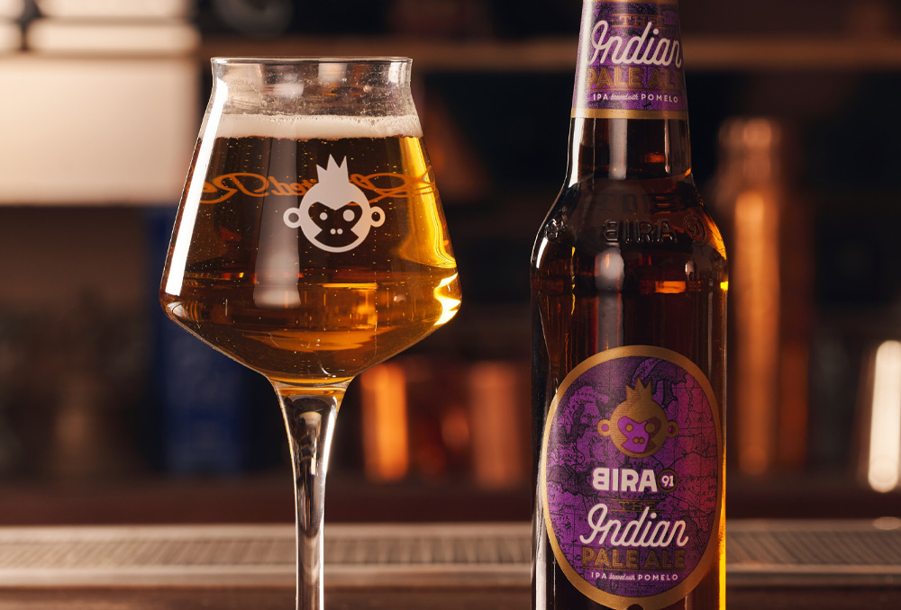

It began, as most of our better ideas do, with a catastrophic failure. The year was 2019, and I had just drained 800 litres of what I'd confidently pitched to our team as our "definitive West Coast IPA" down the brewery drain. It smelled faintly of artichoke water. The team nearly mutinied. That was Batch One.
Why the West Coast IPA?
The West Coast IPA is a deceptively simple beer. It should be clear, dry, bitter, and fiercely aromatic. The malt character should whisper, not shout. The hops should arrive in layers — a resinous pine-and-citrus hit on the nose, followed by a clean, lasting bitterness that dries the palate and makes you reach for another sip. In practice, achieving all of this in a single beer, consistently, batch after batch, is extraordinarily hard.
The problem is that every single variable in the brewhouse interacts. Sulfate levels in the water affect perceived bitterness. Hop addition timing affects whether you get aroma or bitterness. Dry hop contact time affects murkiness. Yeast health affects attenuation. We had 23 variables we were tracking by Batch Four. By Batch Seven, it was 41.
"We binned 800 litres of batch nine. It tasted like artichoke water. The team nearly mutinied." — Hari Kiran, Head Brewer
The Grain Bill Problem
West Coast IPAs are traditionally built on a simple backbone — pale two-row malt with perhaps a small percentage of crystal malt for body. Too much crystal malt adds a residual sweetness that clashes with aggressive hop bitterness. Too little and the beer can taste thin and harsh.
For our first eight batches, we used a 94% pale malt / 6% crystal 40L split that had worked brilliantly in pilot-scale testing. At production scale, something changed. The crystal malt contribution was being lost entirely, resulting in a beer that was technically correct but felt skeletal — clean, yes, but ultimately unsatisfying. The aroma was there. The bitterness was there. But there was nothing for either element to land on.

The solution came from an unlikely source: a conversation with a maltster in Oregon who mentioned that Maris Otter malt — traditionally associated with English bitters, not American IPAs — was delivering exceptional mid-palate structure in pale ales without the cloying sweetness of crystal malt. We substituted 15% of our base malt with Maris Otter in Batch Nine. The artichoke water incident was entirely unrelated, I should clarify. That was a contaminated fermentation vessel.
The Hop Selection
West Coast hop selection is contentious territory. The old guard insists on Chinook, Centennial, and Columbus — the so-called "Three Cs" that defined California brewing in the 1990s. A newer school argues for the tropical expressiveness of Citra and Mosaic. We tried both approaches, and both were wrong for what we were building.
Final Hop Schedule — Batch 15
- 60 min bittering: Columbus (14 IBU contribution)
- 15 min flavour: Centennial + Chinook (dual addition)
- Whirlpool: Citra + Simcoe (equal parts, 30 min steep)
- Dry Hop 1: Mosaic + Citra (cold-side, day 3 of fermentation)
- Dry Hop 2: Centennial (conditioning tank, 48 hours)
The breakthrough came when I stopped thinking of hops as a single ingredient and started thinking of them as a layered flavour architecture. The bittering addition creates the structural bitterness. The late additions create flavour identity. The whirlpool defines the aroma character. The dry hops provide the top note — the first thing you smell when the glass hits your nose. By treating each addition as a distinct layer with a distinct purpose, Batch 14 came close. Batch 15 nailed it.
Batch 15: The Beer That Finally Worked
Batch 15 was brewed on a grey Tuesday in March 2022. The team had been through two and a half years of failures, incremental improvements, and occasional moments of genuine despair. When I pulled the first sample from the fermenter on day four, the aroma that hit me was exactly what I had been chasing since 2019: a complex, layered wave of pine resin, fresh grapefruit pith, tropical stone fruit, and a whisper of fresh-cut grass.
We named it Pacific Divide. It won a Gold at the California Craft Beer Summit that September. More importantly, it became the beer that our regulars ask for by name at the taproom every week — the one where a first sip makes people pause mid-conversation and look down at the glass with raised eyebrows. That's the test that matters.
| Batch | Key Problem | Resolution | Outcome |
|---|---|---|---|
| 1–3 | Malt body too thin | Increased crystal malt % | Too sweet |
| 4–6 | Bitterness too harsh | Reduced bittering hop rate | Lost structure |
| 7–9 | Contamination / off-flavours | Full vessel audit | Resolved |
| 10–12 | Aroma lacks complexity | Introduced Maris Otter | Significant improvement |
| 13–14 | Dry hop murk | Adjusted timing and temp | Near-final |
| 15 | — | All variables aligned | ✦ Gold award-winning recipe |
What Three Years Taught Me
If I had to compress three years of brewing development into a single lesson, it would be this: the variables you think matter are rarely the ones that actually matter. We spent six months obsessing over hop addition timing, only to discover the actual problem was mineral content in our brewing water. We blamed our yeast strain for batch failures that turned out to be a temperature controller fault. Brewing is humbling in the best possible way.
Pacific Divide is now our best-selling beer. It represents fourteen failures and one success — and I wouldn't change any of it.